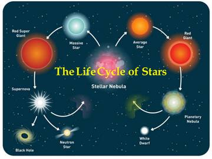
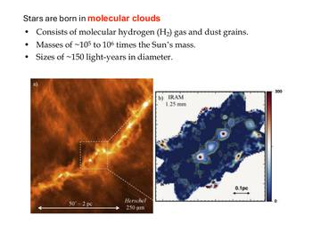
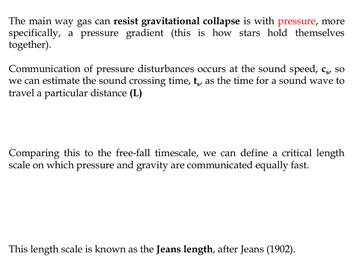
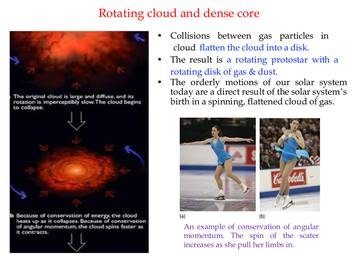
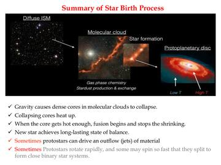

L2 Star FormationL2 Sự hình thành sao
Start hereBắt đầu › L2
Stars form in cold molecular clouds when gravity wins over pressure. Two numbers measure the fight: the free-fall time (how fast gravity acts, depends only on density) and the Jeans length and mass (the size and mass above which gravity wins). As the core shrinks it spins faster, flattens into a disk and may launch jets. This is the lecture with calculations: master t_ff and the Jeans formulas.Sao hình thành trong các đám mây phân tử lạnh khi trọng lực thắng áp suất. Hai đại lượng đo cuộc đấu này: thời gian rơi tự do (trọng lực tác động nhanh thế nào, chỉ phụ thuộc mật độ) và độ dài, khối lượng Jeans (kích thước và khối lượng mà trên đó trọng lực thắng). Khi lõi co lại nó quay nhanh hơn, dẹt thành đĩa và có thể phóng jet. Đây là bài có tính toán: nắm chắc t_ff và công thức Jeans.
L2 17 slide pages · 8 formulas · 30 practice questions17 trang slide · 8 công thức · 30 câu luyện tập · Practice this lectureLuyện bài này
Memory hooksMẹo nhớ
Life cycle and birth of a starVòng đời và sự ra đời của một sao
- Life cycle: stellar nebula → medium-mass star → red giant → planetary nebula → white dwarf; massive star → red supergiant → supernova → neutron star or black hole. [L2 p1]Vòng đời: tinh vân sao → sao khối lượng trung bình → sao đỏ khổng lồ → tinh vân hành tinh → sao lùn trắng; sao khối lượng lớn → siêu khổng lồ đỏ → siêu tân tinh → sao neutron hoặc lỗ đen. [L2 tr.1]
- Star birth chain: prestellar core → Class 0/I protostar → Class II/III pre-main-sequence star → star and planet system; the cores form along filaments in shock-compressed layers. [L2 p2]Chuỗi ra đời của sao: lõi tiền sao → tiền sao Lớp 0/I → sao tiền dãy chính Lớp II/III → hệ sao và hành tinh; các lõi hình thành dọc theo filament trong lớp bị nén sốc. [L2 tr.2]


Molecular cloudsĐám mây phân tử
- Stars are born in molecular clouds: molecular hydrogen (H₂) gas and dust grains; mass ~10⁵ to 10⁶ M☉; size ~150 light-years. [L2 p3]Sao sinh ra trong đám mây phân tử: khí hydro phân tử (H₂) và hạt bụi; khối lượng ~10⁵ đến 10⁶ M☉; kích thước ~150 năm ánh sáng. [L2 tr.3]
- Clouds: temperature ~50 to 100 K, density ~10³ to 10⁴ cm⁻³. (The exercise on p13 uses 30 to 50 K: the slides differ, state which you use.) [L2 p4, p13]Đám mây: nhiệt độ ~50 đến 100 K, mật độ ~10³ đến 10⁴ cm⁻³. (Bài tập tr.13 dùng 30 đến 50 K: slide không thống nhất, hãy nêu bạn dùng giá trị nào.) [L2 tr.4, 13]
- Images: Herschel 250 µm and IRAM 1.25 mm of a filament; Pillars of Creation; B68 in optical and infrared. [L2 p3-7]Ảnh: Herschel 250 µm và IRAM 1,25 mm của một filament; Cột Sáng Tạo; B68 ở quang học và hồng ngoại. [L2 tr.3-7]



Free-fall timeThời gian rơi tự do
- Stars form when gravity overcomes thermal pressure; the question is how long it takes. [L2 p5-7]Sao hình thành khi trọng lực thắng áp suất nhiệt; vấn đề là mất bao lâu. [L2 tr.5-7]
- Dimensional analysis: G = 6.673×10⁻⁸ cm³ s⁻² g⁻¹, so [G] = L³ T⁻² M⁻¹. A time must be T = √(L³ M⁻¹ / G); with M/L³ = ρ this gives t_ff = √(1/(Gρ)). [L2 p8]Phân tích thứ nguyên: G = 6,673×10⁻⁸ cm³ s⁻² g⁻¹, nên [G] = L³ T⁻² M⁻¹. Một thời gian phải là T = √(L³ M⁻¹ / G); với M/L³ = ρ ta được t_ff = √(1/(Gρ)). [L2 tr.8]
- Meaning: the time for material at a given radius in a uniform, self-gravitating medium to collapse to the origin. It depends only on the density. [L2 p8, p12]Ý nghĩa: thời gian để vật chất ở một bán kính nào đó trong môi trường đồng nhất tự hấp dẫn rơi vào tâm. Chỉ phụ thuộc mật độ. [L2 tr.8, 12]
- The exact free-fall of a uniform sphere has a prefactor: t_ff = √(3π/(32Gρ)) = 0.54 × the slide value [ext, checked numerically here by integrating the equation of motion].Rơi tự do chính xác của quả cầu đồng nhất có thêm hệ số: t_ff = √(3π/(32Gρ)) = 0,54 × giá trị trên slide [ngoài slide, đã kiểm bằng tích phân phương trình chuyển động].
- Worked numbers (n = 10³ to 10⁴ cm⁻³, μ = 2 to 2.33): slide form 0.62 to 2.13 Myr; full form 0.34 to 1.16 Myr. Order of magnitude: about 1 Myr. [calc]Số liệu tính (n = 10³ đến 10⁴ cm⁻³, μ = 2 đến 2,33): dạng slide 0,62 đến 2,13 triệu năm; dạng đầy đủ 0,34 đến 1,16 triệu năm. Bậc độ lớn: khoảng 1 triệu năm. [tính]


Sound speed, Jeans length and Jeans massTốc độ âm, độ dài và khối lượng Jeans
- Gas resists collapse with pressure (a pressure gradient). Pressure changes travel at the sound speed c_s; the sound-crossing time over a length L is t_s = L / c_s. [L2 p10]Khí chống sụp đổ bằng áp suất (gradient áp suất). Nhiễu áp suất truyền với tốc độ âm c_s; thời gian âm truyền qua độ dài L là t_s = L / c_s. [L2 tr.10]
- Setting t_s = t_ff gives the critical length where pressure and gravity act equally fast: the Jeans length (Jeans 1902). [L2 p10]Cho t_s = t_ff ta được độ dài tới hạn mà ở đó áp suất và trọng lực tác động nhanh như nhau: độ dài Jeans (Jeans 1902). [L2 tr.10]
- L < L_J: pressure supports the gas; L > L_J: gravity wins. L_J is the minimum size of chunk a cloud can break into. [L2 p11]L < L_J: áp suất giữ được khí; L > L_J: trọng lực thắng. L_J là kích thước tối thiểu của mảnh mà đám mây có thể vỡ ra. [L2 tr.11]
- Jeans mass M_J: the mass within the volume bounded by L_J, equivalently within a sphere of radius L_J. [L2 p11]Khối lượng Jeans M_J: khối lượng trong thể tích giới hạn bởi L_J, tương đương trong quả cầu bán kính L_J. [L2 tr.11]
- The slides do not write the formulas. Isothermal gas: c_s = √(kT/(μ m_H)); rigorous Jeans wavelength L_J = c_s √(π/(Gρ)) (the slide-style estimate c_s t_ff gives c_s/√(Gρ), 0.56 times smaller); M_J = (4π/3) ρ r³ with r = L_J (slide wording) or L_J/2 (common textbook choice). [ext, checked here]Slide không viết công thức. Khí đẳng nhiệt: c_s = √(kT/(μ m_H)); bước sóng Jeans chặt chẽ L_J = c_s √(π/(Gρ)) (ước lượng kiểu slide c_s t_ff cho c_s/√(Gρ), nhỏ hơn 0,56 lần); M_J = (4π/3) ρ r³ với r = L_J (cách nói trên slide) hoặc L_J/2 (lựa chọn thông dụng trong giáo trình). [ngoài slide, đã kiểm]
- Worked numbers (n = 10³ to 10⁴ cm⁻³, T = 30 to 50 K, μ = 2 to 2.33): c_s = 0.33 to 0.46 km/s; L_J = 0.37 to 1.76 pc (slide-style 0.21 to 0.99 pc); M_J (radius L_J/2) = 15 to 140 M☉, (radius L_J) = 121 to 1119 M☉. The answer changes by up to ~8 times with the convention: always state it. [calc]Số liệu tính (n = 10³ đến 10⁴ cm⁻³, T = 30 đến 50 K, μ = 2 đến 2,33): c_s = 0,33 đến 0,46 km/s; L_J = 0,37 đến 1,76 pc (kiểu slide 0,21 đến 0,99 pc); M_J (bán kính L_J/2) = 15 đến 140 M☉, (bán kính L_J) = 121 đến 1119 M☉. Đáp số đổi tới ~8 lần theo quy ước: luôn nêu quy ước. [tính]
- Scalings (take-home 5 and 6): L_J ∝ T^½ ρ^-½ and M_J ∝ T^3/2 ρ^-½: bigger with temperature, smaller with density. Because L_J falls as the density rises, an isothermal cloud breaks up while it collapses: fragmentation. [L2 p12]Quy luật (thông điệp 5 và 6): L_J ∝ T^½ ρ^-½ và M_J ∝ T^3/2 ρ^-½: tăng theo nhiệt độ, giảm theo mật độ. Vì L_J giảm khi mật độ tăng, đám mây đẳng nhiệt vỡ ra trong lúc sụp đổ: phân mảnh. [L2 tr.12]



Rotation, disk and jetsQuay, đĩa và jet
- As gravity makes a dense core smaller it spins faster: conservation of angular momentum (the skater pulling in her arms). Dense cores start with a little rotation. [L2 p14-15]Khi trọng lực làm lõi đặc nhỏ lại nó quay nhanh hơn: bảo toàn mômen động lượng (vận động viên thu tay lại). Lõi đặc ban đầu quay chậm. [L2 tr.14-15]
- Collisions between gas particles flatten the cloud into a disk: a rotating protostar with a rotating disk of gas and dust. The orderly motions of the Solar System are a direct result. [L2 p15]Va chạm giữa các hạt khí làm đám mây dẹt thành đĩa: một tiền sao quay cùng đĩa khí - bụi quay. Chuyển động có trật tự của Hệ Mặt Trời là hệ quả trực tiếp. [L2 tr.15]
- Because of conservation of energy the cloud heats up as it collapses. Rotation drives jets along the rotation axis (scale 1000 AU). [L2 p14, p16]Do bảo toàn năng lượng đám mây nóng lên khi sụp đổ. Quay sinh ra jet dọc trục quay (thang 1000 AU). [L2 tr.14, 16]
- Summary: gravity collapses dense cores; they heat up; fusion starts and stops the shrinking; the star reaches a long-lasting balance. Sometimes jets; sometimes so fast a spin that a close binary forms. [L2 p17]Tóm tắt: trọng lực làm lõi đặc sụp đổ; chúng nóng lên; nhiệt hạch bắt đầu và dừng sự co; sao đạt cân bằng lâu dài. Đôi khi có jet; đôi khi quay nhanh tới mức tạo sao đôi gần. [L2 tr.17]
- Angular momentum: I ω = const with I ∝ M r², so ω₂ = ω₁ (r₁/r₂)²: a core that shrinks 10 times spins 100 times faster (illustration). [calc]Mômen động lượng: I ω = hằng số với I ∝ M r², nên ω₂ = ω₁ (r₁/r₂)²: lõi co nhỏ 10 lần thì quay nhanh gấp 100 lần (minh họa). [tính]




Formulas explained, symbol by symbolCác công thức, giải thích từng ký hiệu
Click 'next symbol' (or a symbol, or a row): it lights up in the formula and its meaning, unit, implication and numbers appear. Each card shows how the formula is derived, a worked example and the usual mistakes. Cards marked 'not on the slides' are standard physics added here and checked in Python.Bấm 'ký hiệu kế tiếp' (hoặc một ký hiệu, hoặc một hàng): ký hiệu sáng lên trong công thức và hiện ý nghĩa, đơn vị, hệ quả và số liệu. Mỗi thẻ có cách suy ra, ví dụ có số và lỗi thường gặp. Thẻ ghi 'không có trên slide' là vật lý chuẩn được thêm vào và kiểm trong Python.
| SymbolKý hiệu | Name [unit]Tên [đơn vị] | MeaningÝ nghĩa | What it impliesHệ quả | Numbers assignedSố gán |
|---|---|---|---|---|
| mass densitymật độ khối lượng [g cm⁻³] | Mass per unit volume.Khối lượng trên một đơn vị thể tích. | n = 10³ → 3.87×10⁻²¹ g/cm³; n = 10⁴ → 3.87×10⁻²⁰ g/cm³ (μ = 2.33)n = 10³ → 3,87×10⁻²¹ g/cm³; n = 10⁴ → 3,87×10⁻²⁰ g/cm³ (μ = 2,33) | ||
| number densitymật độ số hạt [cm⁻³] | Molecules per cm³.Số phân tử trên cm³. | 10³ to 10⁴ cm⁻³ (L2 p4, p9, p13)10³ đến 10⁴ cm⁻³ (L2 tr.4, 9, 13) | ||
| mean molecular weightkhối lượng phân tử trung bình [—] | Mass of one particle in units of m_H.Khối lượng một hạt tính theo m_H. | μ = 2.0 for pure H₂; μ ≈ 2.33 when helium is included [ext]. It changes ρ by 16 %.μ = 2,0 cho H₂ thuần; μ ≈ 2,33 khi tính cả heli [ngoài slide]. Nó đổi ρ 16 %. | 2.0 or 2.33: state which2,0 hoặc 2,33: hãy nêu dùng giá trị nào | |
| hydrogen masskhối lượng hydro [g] | Mass of one hydrogen atom (about 1 u).Khối lượng một nguyên tử hydro (khoảng 1 u). | 1.66×10⁻²⁴ g1,66×10⁻²⁴ g |
In plain wordsNói bằng lời dễ hiểu
Slides count molecules per cubic centimetre; gravity cares about mass per cubic centimetre. The conversion multiplies the count by the mass of one particle. For molecular hydrogen gas (with helium) one particle weighs about 2.33 hydrogen atoms.Slide đếm số phân tử trên mỗi cm³; trọng lực quan tâm khối lượng trên mỗi cm³. Phép đổi nhân số hạt với khối lượng của một hạt. Với khí hydro phân tử (có heli) một hạt nặng khoảng 2,33 nguyên tử hydro.
How it is derivedSuy ra từng bước
- Each particle has mass μ m_H.Mỗi hạt có khối lượng μ m_H.
- n particles per cm³ give a mass of n μ m_H per cm³.n hạt trên cm³ cho khối lượng n μ m_H trên cm³.
Check the unitsKiểm tra đơn vị
(cm⁻³)(1)(g) = g cm⁻³ ✓.(cm⁻³)(1)(g) = g cm⁻³ ✓.
Worked exampleVí dụ có số
n = 10⁴ cm⁻³, μ = 2.33: ρ = 10⁴ × 2.33 × 1.66×10⁻²⁴ g = 3.87×10⁻²⁰ g/cm³.n = 10⁴ cm⁻³, μ = 2,33: ρ = 10⁴ × 2,33 × 1,66×10⁻²⁴ g = 3,87×10⁻²⁰ g/cm³.
What if... (feel the formula)Nếu... thì... (cảm nhận công thức)
- n = 10⁴ cm⁻³ is only 3.87×10⁻²⁰ g/cm³: about 2.6×10¹⁹ times less dense than water (1 g/cm³).n = 10⁴ cm⁻³ chỉ là 3,87×10⁻²⁰ g/cm³: loãng hơn nước (1 g/cm³) khoảng 2,6×10¹⁹ lần.
- Using μ = 2 instead of 2.33 lowers ρ by 14 % and raises t_ff by 8 %.Dùng μ = 2 thay vì 2,33 làm ρ giảm 14 % và t_ff tăng 8 %.
Common mistakesLỗi thường gặp
- Using n as an atom count with μ = 1 (the cloud is molecular, H₂).Dùng n như số nguyên tử với μ = 1 (đám mây là phân tử, H₂).
- Mixing SI and cgs: G = 6.67×10⁻⁸ goes with g, cm, s.Trộn SI và cgs: G = 6,67×10⁻⁸ đi với g, cm, s.
Test yourselfTự kiểm tra
A cloud has n = 10³ cm⁻³ of H₂ (μ = 2). What is ρ in g/cm³?Một đám mây có n = 10³ cm⁻³ H₂ (μ = 2). ρ bằng bao nhiêu g/cm³?
Show the formulaHiện công thức
Practice problems for this lectureBài tập tương tự của bài này →
| SymbolKý hiệu | Name [unit]Tên [đơn vị] | MeaningÝ nghĩa | What it impliesHệ quả | Numbers assignedSố gán |
|---|---|---|---|---|
| gravitational constanthằng số hấp dẫn [cm³ s⁻² g⁻¹] | Strength of gravity; its dimensions fix the formula.Độ mạnh của trọng lực; thứ nguyên của nó quyết định công thức. | 6.673×10⁻⁸ cm³ s⁻² g⁻¹ (slide); CODATA 6.674×10⁻⁸6,673×10⁻⁸ cm³ s⁻² g⁻¹ (slide); CODATA 6,674×10⁻⁸ | ||
| a timemột thời gian [s] | The only combination of G, M and L with the dimension of time.Tổ hợp duy nhất của G, M và L có thứ nguyên thời gian. | |||
| mass densitymật độ khối lượng [g cm⁻³] | M/L³: mass and length enter only through the density.M/L³: khối lượng và độ dài chỉ vào qua mật độ. | The free-fall time does not depend on the size of the cloud.Thời gian rơi tự do không phụ thuộc kích thước đám mây. | ||
| free-fall timethời gian rơi tự do [s → Myr] | Time for material in a uniform, self-gravitating medium to collapse to the origin.Thời gian để vật chất trong môi trường đồng nhất tự hấp dẫn rơi về tâm. | Only density: ×10 in density gives ×0.32 in time.Chỉ mật độ: mật độ ×10 thì thời gian ×0,32. | n = 10³ → 1.97 Myr; n = 10⁴ → 0.62 Myr (μ = 2.33); range of the exercise 0.62 to 2.13 Myrn = 10³ → 1,97 triệu năm; n = 10⁴ → 0,62 triệu năm (μ = 2,33); khoảng của bài tập 0,62 đến 2,13 triệu năm |
In plain wordsNói bằng lời dễ hiểu
Gravity gets stronger when there is more mass packed in the same volume, so denser gas falls in sooner. The surprise is that the size of the cloud does not matter: a bigger cloud has more mass pulling (faster) but also more distance to fall (slower), and the two effects cancel, leaving only the density.Trọng lực mạnh hơn khi có nhiều khối lượng hơn trong cùng một thể tích, nên khí đặc hơn rơi vào sớm hơn. Điều bất ngờ là kích thước đám mây không quan trọng: đám mây lớn hơn có nhiều khối lượng kéo hơn (nhanh hơn) nhưng cũng phải rơi quãng dài hơn (chậm hơn), hai hiệu ứng triệt tiêu, chỉ còn mật độ.
How it is derivedSuy ra từng bước
- The only quantities available are G, a length L and a mass M. We want a time T.Các đại lượng sẵn có chỉ là G, độ dài L và khối lượng M. Ta cần một thời gian T.
- G M / L³ has dimension (L³ T⁻² M⁻¹)(M)(L⁻³) = T⁻², so T = √(L³ / (G M)).G M / L³ có thứ nguyên (L³ T⁻² M⁻¹)(M)(L⁻³) = T⁻², nên T = √(L³ / (G M)).
- M / L³ is the density ρ: L and M disappear, t_ff = 1 / √(G ρ).M / L³ là mật độ ρ: L và M biến mất, t_ff = 1 / √(G ρ).
- Dimensional analysis cannot give a pure number in front; the exact value is on the next card.Phân tích thứ nguyên không cho được hệ số số đứng trước; giá trị chính xác ở thẻ kế tiếp.
Check the unitsKiểm tra đơn vị
[Gρ] = (cm³ s⁻² g⁻¹)(g cm⁻³) = s⁻²; its inverse square root is s ✓. Check with numbers: ρ = 3.87×10⁻²⁰ → Gρ = 2.58×10⁻²⁷ s⁻² → t = 1.97×10¹³ s = 0.62 Myr ✓.[Gρ] = (cm³ s⁻² g⁻¹)(g cm⁻³) = s⁻²; nghịch đảo căn bậc hai của nó là s ✓. Kiểm bằng số: ρ = 3,87×10⁻²⁰ → Gρ = 2,58×10⁻²⁷ s⁻² → t = 1,97×10¹³ s = 0,62 triệu năm ✓.
Worked exampleVí dụ có số
n = 10⁴ cm⁻³, μ = 2.33: Gρ = 6.67×10⁻⁸ × 3.87×10⁻²⁰ = 2.58×10⁻²⁷ s⁻²; t_ff = 1/√(Gρ) = 1.97×10¹³ s = 0.62 Myr (1 Myr = 3.156×10¹³ s).n = 10⁴ cm⁻³, μ = 2,33: Gρ = 6,67×10⁻⁸ × 3,87×10⁻²⁰ = 2,58×10⁻²⁷ s⁻²; t_ff = 1/√(Gρ) = 1,97×10¹³ s = 0,62 triệu năm (1 triệu năm = 3,156×10¹³ s).
What if... (feel the formula)Nếu... thì... (cảm nhận công thức)
- Density ×4 → time ÷2. Density ×10 → time ×0.316.Mật độ ×4 → thời gian ÷2. Mật độ ×10 → thời gian ×0,316.
- n from 10³ to 10⁴: t_ff goes from 1.97 to 0.62 Myr; a collapsing cloud speeds up as it gets denser (runaway).n từ 10³ lên 10⁴: t_ff đi từ 1,97 xuống 0,62 triệu năm; đám mây đang sụp đổ nhanh dần khi đặc hơn (tăng tốc).
- About 1 Myr is short compared with the age of the Sun (4.6 Gyr): star formation is fast on the scale of a galaxy.Cỡ 1 triệu năm là ngắn so với tuổi Mặt Trời (4,6 tỉ năm): sao hình thành nhanh trên thang thời gian của một thiên hà.
Common mistakesLỗi thường gặp
- Forgetting to convert seconds to Myr.Quên đổi giây ra triệu năm.
- Using n instead of ρ inside the square root.Dùng n thay cho ρ trong dấu căn.
Test yourselfTự kiểm tra
A cloud twice as large but with the same density: how does t_ff change?Đám mây lớn gấp đôi nhưng cùng mật độ: t_ff đổi thế nào?
Show the formulaHiện công thức
Practice problems for this lectureBài tập tương tự của bài này →
| SymbolKý hiệu | Name [unit]Tên [đơn vị] | MeaningÝ nghĩa | What it impliesHệ quả | Numbers assignedSố gán |
|---|---|---|---|---|
| free-fall timethời gian rơi tự do [s] | Time for a shell at r₀ to reach the centre.Thời gian để lớp vỏ ở r₀ rơi tới tâm. | n = 10⁴ → 0.34 Myr; n = 10³ → 1.07 Myr (μ = 2.33); exercise range 0.34 to 1.16 Myrn = 10⁴ → 0,34 triệu năm; n = 10³ → 1,07 triệu năm (μ = 2,33); khoảng của bài tập 0,34 đến 1,16 triệu năm | ||
| initial radiusbán kính ban đầu [cm] | Starting radius of the falling shell.Bán kính xuất phát của lớp vỏ rơi. | |||
| enclosed masskhối lượng bên trong [g] | Mass inside r₀: M = (4π/3) ρ r₀³.Khối lượng trong r₀: M = (4π/3) ρ r₀³. | |||
| gravitational constanthằng số hấp dẫn [cm³ s⁻² g⁻¹] | (as defined on the previous cards)(như đã định nghĩa ở các thẻ trước) | |||
| mass densitymật độ khối lượng [g cm⁻³] | (as defined on the previous cards)(như đã định nghĩa ở các thẻ trước) | Factor √(3π/32) = 0.543.Hệ số √(3π/32) = 0,543. |
In plain wordsNói bằng lời dễ hiểu
The dimension estimate counts the rough time; the exact solution follows the fall: as the shell falls in, gravity at its position grows (it is closer to the centre), so it speeds up and arrives sooner. That is why the exact time is 0.54 of the estimate.Ước lượng thứ nguyên chỉ cho thời gian thô; lời giải chính xác theo dõi cú rơi: khi lớp vỏ rơi vào, trọng lực tại vị trí nó tăng (gần tâm hơn), nên nó nhanh dần và tới sớm hơn. Vì vậy thời gian chính xác bằng 0,54 ước lượng.
How it is derivedSuy ra từng bước
- A shell of radius r₀ feels only the mass M inside it, constant during the fall.Một lớp vỏ bán kính r₀ chỉ chịu khối lượng M bên trong nó, không đổi trong lúc rơi.
- Energy conservation from rest: ½ (dr/dt)² − GM/r = −GM/r₀, so dr/dt = −√(2GM (1/r − 1/r₀)).Bảo toàn năng lượng từ trạng thái nghỉ: ½ (dr/dt)² − GM/r = −GM/r₀, nên dr/dt = −√(2GM (1/r − 1/r₀)).
- Substituting r = r₀ cos²θ and integrating from θ = 0 to π/2 gives t = (π/2) √(r₀³ / (2GM)).Thay r = r₀ cos²θ và tích phân từ θ = 0 tới π/2 cho t = (π/2) √(r₀³ / (2GM)).
- With M = (4π/3) ρ r₀³: t = (π/2) √(3 / (8π G ρ)) = √(3π / (32 G ρ)) = 0.543 / √(Gρ).Với M = (4π/3) ρ r₀³: t = (π/2) √(3 / (8π G ρ)) = √(3π / (32 G ρ)) = 0,543 / √(Gρ).
- Check [calc]: integrating the equation of motion numerically gives the same time to better than 0.2 %.Kiểm [tính]: tích phân số phương trình chuyển động cho cùng thời gian, sai khác dưới 0,2 %.
Check the unitsKiểm tra đơn vị
Same dimensions as the slide formula (s) ✓; the factor √(3π/32) = 0.5427 is dimensionless ✓. Verified [calc]: numerical integration agrees to 0.2 %.Cùng thứ nguyên với công thức slide (s) ✓; hệ số √(3π/32) = 0,5427 không thứ nguyên ✓. Đã kiểm [tính]: tích phân số khớp tới 0,2 %.
Worked exampleVí dụ có số
n = 10⁴, μ = 2.33: t_ff = 0.543 × 0.62 = 0.34 Myr (slide form 0.62 Myr).n = 10⁴, μ = 2,33: t_ff = 0,543 × 0,62 = 0,34 triệu năm (dạng slide 0,62 triệu năm).
What if... (feel the formula)Nếu... thì... (cảm nhận công thức)
- n = 10⁴, μ = 2.33: slide 0.62 Myr, exact 0.34 Myr: both 'about 0.5 Myr', the same order of magnitude.n = 10⁴, μ = 2,33: slide 0,62 triệu năm, chính xác 0,34 triệu năm: cả hai 'cỡ 0,5 triệu năm', cùng bậc độ lớn.
- In an exam, write the slide form first (it is what the lecture derived), then say the exact form is 0.54 times it.Khi thi, viết dạng slide trước (đó là điều bài giảng suy ra), rồi nói dạng chính xác bằng 0,54 lần nó.
Common mistakesLỗi thường gặp
- Quoting only one of the two forms without saying which one: the exercise answer differs by a factor 1.84.Chỉ nêu một trong hai dạng mà không nói dạng nào: đáp số bài tập khác nhau 1,84 lần.
Test yourselfTự kiểm tra
Why is the exact time shorter than 1/√(Gρ)?Vì sao thời gian chính xác ngắn hơn 1/√(Gρ)?
Show the formulaHiện công thức
Practice problems for this lectureBài tập tương tự của bài này →
| SymbolKý hiệu | Name [unit]Tên [đơn vị] | MeaningÝ nghĩa | What it impliesHệ quả | Numbers assignedSố gán |
|---|---|---|---|---|
| isothermal sound speedtốc độ âm đẳng nhiệt [cm s⁻¹] | Speed at which pressure changes travel.Tốc độ mà thay đổi áp suất truyền đi. | c_s ∝ √T: hotter gas resists collapse better.c_s ∝ √T: khí nóng chống sụp đổ tốt hơn. | 10 K → 0.19 km/s; 30 K → 0.33; 50 K → 0.42; 100 K → 0.60 km/s (μ = 2.33)10 K → 0,19 km/s; 30 K → 0,33; 50 K → 0,42; 100 K → 0,60 km/s (μ = 2,33) | |
| Boltzmann constanthằng số Boltzmann [erg K⁻¹] | Links temperature to energy.Nối nhiệt độ với năng lượng. | 1.381×10⁻¹⁶ erg/K1,381×10⁻¹⁶ erg/K | ||
| gas temperaturenhiệt độ khí [K] | (as defined on the previous cards)(như đã định nghĩa ở các thẻ trước) | 30 to 50 K (L2 p13); 50 to 100 K (L2 p4)30 đến 50 K (L2 tr.13); 50 đến 100 K (L2 tr.4) | ||
| mean molecular weightkhối lượng phân tử trung bình [—] | (as defined on the previous cards)(như đã định nghĩa ở các thẻ trước) | |||
| hydrogen masskhối lượng hydro [g] | (as defined on the previous cards)(như đã định nghĩa ở các thẻ trước) | |||
| sound-crossing timethời gian âm truyền [s] | Time for a pressure signal to cross the length L.Thời gian để tín hiệu áp suất đi qua độ dài L. | Pressure wins if t_s < t_ff.Áp suất thắng nếu t_s < t_ff. | ||
| lengthđộ dài [cm] | Size of the clump.Kích thước cục khí. |
In plain wordsNói bằng lời dễ hiểu
A sound wave is molecules bumping into each other and passing the push along. The faster the molecules jostle (higher T), the faster the push travels; heavier molecules (larger μ) pass it more slowly. So hot light gas carries signals fastest.Sóng âm là các phân tử va chạm và truyền cú đẩy đi. Phân tử chuyển động càng nhanh (T cao) thì cú đẩy truyền càng nhanh; phân tử nặng hơn (μ lớn) truyền chậm hơn. Vậy khí nóng và nhẹ truyền tín hiệu nhanh nhất.
How it is derivedSuy ra từng bước
- For an ideal gas P = ρ k T / (μ m_H).Với khí lý tưởng P = ρ k T / (μ m_H).
- The sound speed is c_s² = dP/dρ; at constant temperature (isothermal) this is k T / (μ m_H).Tốc độ âm c_s² = dP/dρ; ở nhiệt độ không đổi (đẳng nhiệt) đó là k T / (μ m_H).
- Time to cross a length L at speed c_s: t_s = L / c_s (slide p10).Thời gian đi qua độ dài L với tốc độ c_s: t_s = L / c_s (slide tr.10).
- Check [calc]: computing dP/dρ numerically gives the same c_s.Kiểm [tính]: tính dP/dρ bằng số cho cùng c_s.
Check the unitsKiểm tra đơn vị
[kT/(μ m_H)] = (erg K⁻¹ K)/g = erg/g = cm² s⁻²; the square root is cm/s ✓.[kT/(μ m_H)] = (erg K⁻¹ K)/g = erg/g = cm² s⁻²; căn bậc hai là cm/s ✓.
Worked exampleVí dụ có số
T = 30 K, μ = 2.33: c_s = √(1.381×10⁻¹⁶ × 30 / (2.33 × 1.661×10⁻²⁴)) = 3.27×10⁴ cm/s = 0.33 km/s.T = 30 K, μ = 2,33: c_s = √(1,381×10⁻¹⁶ × 30 / (2,33 × 1,661×10⁻²⁴)) = 3,27×10⁴ cm/s = 0,33 km/s.
What if... (feel the formula)Nếu... thì... (cảm nhận công thức)
- T ×4 → c_s ×2. μ 2.33 → 2.0 → c_s ×1.08.T ×4 → c_s ×2. μ 2,33 → 2,0 → c_s ×1,08.
- At 30 K the cloud gas has c_s = 0.33 km/s: about the speed of sound in air at room temperature (0.34 km/s), even though the cloud is 30 K, because the gas is light (μ = 2.33 against 29 for air). (Only an order-of-magnitude comparison, [ext].)Ở 30 K khí đám mây có c_s = 0,33 km/s: cỡ tốc độ âm trong không khí ở nhiệt độ phòng (0,34 km/s), dù đám mây chỉ 30 K, vì khí này nhẹ (μ = 2,33 so với 29 của không khí). (Chỉ so sánh bậc độ lớn, [ngoài slide].)
- Across the whole cloud (46 pc = 1.4×10²⁰ cm) a sound signal takes 1.4×10⁸ yr: much longer than the free-fall time. Pressure cannot hold up a big region (L2 p10).Qua cả đám mây (46 pc = 1,4×10²⁰ cm) một tín hiệu âm mất 1,4×10⁸ năm: lâu hơn nhiều thời gian rơi tự do. Áp suất không giữ được một vùng lớn (L2 tr.10).
Common mistakesLỗi thường gặp
- Using the adiabatic sound speed √(γ P/ρ): the exercise is isothermal.Dùng tốc độ âm đoạn nhiệt √(γ P/ρ): bài tập này đẳng nhiệt.
- Putting T in °C.Đặt T theo °C.
Test yourselfTự kiểm tra
Why does a hotter cloud resist collapse better?Vì sao đám mây nóng hơn chống sụp đổ tốt hơn?
Show the formulaHiện công thức
Practice problems for this lectureBài tập tương tự của bài này →
| SymbolKý hiệu | Name [unit]Tên [đơn vị] | MeaningÝ nghĩa | What it impliesHệ quả | Numbers assignedSố gán |
|---|---|---|---|---|
| Jeans lengthđộ dài Jeans [cm → pc] | Clumps larger than λ_J collapse; smaller ones are held up by pressure.Cục khí lớn hơn λ_J sụp đổ; nhỏ hơn được áp suất giữ. | Slide: L < L_J pressure supports, L > L_J gravity wins (p11).Slide: L < L_J áp suất giữ, L > L_J trọng lực thắng (tr.11). | n = 10⁴, T = 30 K: 0.37 pc (7.6×10⁴ AU); n = 10³, T = 30 K: 1.17 pc; exercise range 0.37 to 1.76 pc; slide-style 0.21 to 0.99 pcn = 10⁴, T = 30 K: 0,37 pc (7,6×10⁴ AU); n = 10³, T = 30 K: 1,17 pc; khoảng của bài tập 0,37 đến 1,76 pc; kiểu slide 0,21 đến 0,99 pc | |
| sound speedtốc độ âm [cm s⁻¹] | (as defined on the previous cards)(như đã định nghĩa ở các thẻ trước) | |||
| gravitational constanthằng số hấp dẫn [cm³ s⁻² g⁻¹] | (as defined on the previous cards)(như đã định nghĩa ở các thẻ trước) | |||
| mass densitymật độ khối lượng [g cm⁻³] | (as defined on the previous cards)(như đã định nghĩa ở các thẻ trước) | Denser gas has a smaller Jeans length: λ_J ∝ ρ^-1/2.Khí đặc hơn có độ dài Jeans nhỏ hơn: λ_J ∝ ρ^-1/2. | ||
| Boltzmann constanthằng số Boltzmann [erg K⁻¹] | (as defined on the previous cards)(như đã định nghĩa ở các thẻ trước) | |||
| temperaturenhiệt độ [K] | (as defined on the previous cards)(như đã định nghĩa ở các thẻ trước) | Hotter gas has a larger Jeans length: λ_J ∝ T^1/2.Khí nóng hơn có độ dài Jeans lớn hơn: λ_J ∝ T^1/2. | ||
| mean molecular weightkhối lượng phân tử trung bình [—] | (as defined on the previous cards)(như đã định nghĩa ở các thẻ trước) | |||
| hydrogen masskhối lượng hydro [g] | (as defined on the previous cards)(như đã định nghĩa ở các thẻ trước) |
In plain wordsNói bằng lời dễ hiểu
Imagine a clump of gas of size L. If a squeeze can cross it faster than gravity can pull it together (t_s < t_ff), the pressure wins and the clump re-expands. If gravity is quicker (t_s > t_ff), the clump is trapped by its own weight and collapses. The Jeans length is the size at which the two times are equal.Hãy hình dung một cục khí cỡ L. Nếu một cú nén truyền qua nó nhanh hơn trọng lực kéo nó lại (t_s < t_ff) thì áp suất thắng và cục khí giãn trở lại. Nếu trọng lực nhanh hơn (t_s > t_ff) thì cục khí bị chính trọng lượng của nó giữ lại và sụp đổ. Độ dài Jeans là kích thước mà hai thời gian bằng nhau.
How it is derivedSuy ra từng bước
- Slide (p10): sound crosses a clump of size L in t_s = L/c_s; gravity collapses it in t_ff = 1/√(Gρ). They are equal at L = c_s / √(Gρ).Slide (tr.10): âm đi qua cục khí cỡ L trong t_s = L/c_s; trọng lực làm nó sụp đổ trong t_ff = 1/√(Gρ). Hai thời gian bằng nhau tại L = c_s / √(Gρ).
- Rigorous (p11, perturbation analysis): a small density wave δρ ∝ e^{i(kx − ωt)} in an isothermal self-gravitating gas obeys ω² = c_s² k² − 4πGρ.Chặt chẽ (tr.11, phân tích nhiễu loạn): sóng mật độ nhỏ δρ ∝ e^{i(kx − ωt)} trong khí đẳng nhiệt tự hấp dẫn thỏa ω² = c_s² k² − 4πGρ.
- The wave grows (ω² < 0) when k < k_J = √(4πGρ) / c_s.Sóng tăng trưởng (ω² < 0) khi k < k_J = √(4πGρ) / c_s.
- The critical wavelength is λ_J = 2π / k_J = c_s √(π / (Gρ)), √π = 1.77 times the slide estimate.Bước sóng tới hạn là λ_J = 2π / k_J = c_s √(π / (Gρ)), gấp √π = 1,77 lần ước lượng kiểu slide.
- Check [calc]: the root of the dispersion relation was found numerically and agrees with the closed form.Kiểm [tính]: nghiệm của hệ thức tán sắc được tìm bằng số và khớp với công thức đóng.
Check the unitsKiểm tra đơn vị
(cm/s) × √(1/(cm³ s⁻² g⁻¹ · g cm⁻³)) = (cm/s) × √(s²) = cm ✓. Check: 3.27×10⁴ cm/s × √(π/(6.67×10⁻⁸ × 3.87×10⁻²⁰)) = 3.27×10⁴ × 3.49×10¹³ = 1.14×10¹⁸ cm ✓.(cm/s) × √(1/(cm³ s⁻² g⁻¹ · g cm⁻³)) = (cm/s) × √(s²) = cm ✓. Kiểm: 3,27×10⁴ cm/s × √(π/(6,67×10⁻⁸ × 3,87×10⁻²⁰)) = 3,27×10⁴ × 3,49×10¹³ = 1,14×10¹⁸ cm ✓.
Worked exampleVí dụ có số
n = 10⁴, T = 30 K, μ = 2.33: c_s = 0.33 km/s, ρ = 3.87×10⁻²⁰ g/cm³, λ_J = 1.14×10¹⁸ cm = 0.37 pc = 7.6×10⁴ AU (1 pc = 3.086×10¹⁸ cm).n = 10⁴, T = 30 K, μ = 2,33: c_s = 0,33 km/s, ρ = 3,87×10⁻²⁰ g/cm³, λ_J = 1,14×10¹⁸ cm = 0,37 pc = 7,6×10⁴ AU (1 pc = 3,086×10¹⁸ cm).
What if... (feel the formula)Nếu... thì... (cảm nhận công thức)
- T ×4 → λ_J ×2; density ×100 → λ_J ÷10.T ×4 → λ_J ×2; mật độ ×100 → λ_J ÷10.
- The whole cloud of L2 p3 is ~150 ly = 46 pc across, while λ_J is 0.37 to 1.76 pc: the cloud contains about 26 to 124 Jeans lengths in a row, so it is far too big to be held up and it breaks into many collapsing pieces (take-home 6). [calc]Cả đám mây ở L2 tr.3 rộng ~150 ly = 46 pc, còn λ_J là 0,37 đến 1,76 pc: đám mây chứa khoảng 26 đến 124 độ dài Jeans xếp liền, nên quá lớn để được giữ và vỡ thành nhiều mảnh đang sụp đổ (thông điệp 6). [tính]
- A cold dense core (n = 10⁵, T = 10 K) has λ_J = 0.07 pc, about 14 000 AU: the size of the core seen on L2 p12 (10 000 AU).Lõi đặc lạnh (n = 10⁵, T = 10 K) có λ_J = 0,07 pc, khoảng 14 000 AU: cỡ lõi thấy trên L2 tr.12 (10 000 AU).
Common mistakesLỗi thường gặp
- Not saying which form of L_J is used: the two differ by 1.77.Không nói dùng dạng L_J nào: hai dạng khác nhau 1,77 lần.
- Mixing cgs (G, k) with SI temperatures in km/s.Trộn cgs (G, k) với tốc độ km/s.
Test yourselfTự kiểm tra
Why does the Jeans length shrink when the cloud gets denser?Vì sao độ dài Jeans giảm khi đám mây đặc hơn?
Show the formulaHiện công thức
Practice problems for this lectureBài tập tương tự của bài này →
| SymbolKý hiệu | Name [unit]Tên [đơn vị] | MeaningÝ nghĩa | What it impliesHệ quả | Numbers assignedSố gán |
|---|---|---|---|---|
| Jeans masskhối lượng Jeans [g → M☉] | Critical mass: a clump heavier than M_J collapses.Khối lượng tới hạn: cục khí nặng hơn M_J sụp đổ. | Depends on the sphere radius chosen: always state it.Phụ thuộc bán kính cầu chọn: luôn nêu rõ. | n = 10⁴, T = 30 K: 15.1 M☉ (r = λ_J/2), 121 M☉ (r = λ_J); exercise range 15 to 140 M☉ and 121 to 1119 M☉n = 10⁴, T = 30 K: 15,1 M☉ (r = λ_J/2), 121 M☉ (r = λ_J); khoảng của bài tập 15 đến 140 M☉ và 121 đến 1119 M☉ | |
| mass densitymật độ khối lượng [g cm⁻³] | (as defined on the previous cards)(như đã định nghĩa ở các thẻ trước) | M_J ∝ ρ^-1/2: denser clumps are unstable at lower mass.M_J ∝ ρ^-1/2: cục đặc hơn bất ổn ở khối lượng nhỏ hơn. | ||
| radius of the spherebán kính quả cầu [cm] | λ_J/2 (textbook) or λ_J (slide wording).λ_J/2 (giáo trình) hoặc λ_J (cách nói trên slide). | 1 M☉ = 1.99×10³³ g1 M☉ = 1,99×10³³ g |
In plain wordsNói bằng lời dễ hiểu
The Jeans mass is simply 'how much gas fits inside a sphere of Jeans size'. Hot, thin gas needs a huge mass before gravity wins; cold, dense gas needs only a little. The lecture says 'mass in a sphere of radius L_J'; many books take half that radius, giving a mass 8 times smaller.Khối lượng Jeans đơn giản là 'lượng khí chứa trong một quả cầu cỡ độ dài Jeans'. Khí nóng và loãng cần khối lượng khổng lồ trước khi trọng lực thắng; khí lạnh và đặc chỉ cần ít. Bài giảng nói 'khối lượng trong quả cầu bán kính L_J'; nhiều sách lấy nửa bán kính đó, cho khối lượng nhỏ hơn 8 lần.
How it is derivedSuy ra từng bước
- The mass of a uniform sphere is (4π/3) ρ r³.Khối lượng quả cầu đồng nhất là (4π/3) ρ r³.
- With r = λ_J / 2: M_J = (π/6) ρ λ_J³.Với r = λ_J / 2: M_J = (π/6) ρ λ_J³.
- Insert λ_J = (π k T / (G μ m_H ρ))^½: M_J = (π/6) (π k T / (G μ m_H))^{3/2} ρ^{-1/2}.Thay λ_J = (π k T / (G μ m_H ρ))^½: M_J = (π/6) (π k T / (G μ m_H))^{3/2} ρ^{-1/2}.
- Radius λ_J instead of λ_J / 2 multiplies the mass by 2³ = 8.Bán kính λ_J thay vì λ_J / 2 nhân khối lượng với 2³ = 8.
Check the unitsKiểm tra đơn vị
(g cm⁻³)(cm³) = g ✓. Check: ρ λ_J³ π/6 = 3.87×10⁻²⁰ × (1.14×10¹⁸)³ × 0.524 = 3.0×10³⁴ g = 15 M☉ ✓.(g cm⁻³)(cm³) = g ✓. Kiểm: ρ λ_J³ π/6 = 3,87×10⁻²⁰ × (1,14×10¹⁸)³ × 0,524 = 3,0×10³⁴ g = 15 M☉ ✓.
Worked exampleVí dụ có số
n = 10⁴, T = 30 K: ρ = 3.87×10⁻²⁰, λ_J = 1.14×10¹⁸ cm; M_J = (π/6) ρ λ_J³ = 3.01×10³⁴ g = 15.1 M☉; with r = λ_J: 121 M☉.n = 10⁴, T = 30 K: ρ = 3,87×10⁻²⁰, λ_J = 1,14×10¹⁸ cm; M_J = (π/6) ρ λ_J³ = 3,01×10³⁴ g = 15,1 M☉; với r = λ_J: 121 M☉.
What if... (feel the formula)Nếu... thì... (cảm nhận công thức)
- T ×4 → M_J ×8 (T^3/2). Density ×100 → M_J ÷10.T ×4 → M_J ×8 (T^3/2). Mật độ ×100 → M_J ÷10.
- The cloud of L2 p3 has 10⁵ to 10⁶ M☉ and M_J is 15 to 1119 M☉: at least ~100 Jeans masses, so the cloud makes many stars, not one.Đám mây ở L2 tr.3 có 10⁵ đến 10⁶ M☉ và M_J là 15 đến 1119 M☉: ít nhất ~100 khối lượng Jeans, nên đám mây tạo ra nhiều sao, không phải một sao.
- Always write which radius you used: the answer can differ by 8.Luôn ghi bán kính bạn dùng: đáp số có thể khác nhau 8 lần.
Common mistakesLỗi thường gặp
- Writing a single number for M_J without the convention (the answer ranges over a factor 8).Chỉ viết một số cho M_J mà không nêu quy ước (đáp số trải rộng 8 lần).
- Forgetting the mass unit: 1 M☉ = 1.99×10³³ g.Quên đơn vị khối lượng: 1 M☉ = 1,99×10³³ g.
Test yourselfTự kiểm tra
Compute M_J for n = 10⁴, T = 30 K with both radii and say why they differ by 8.Tính M_J với n = 10⁴, T = 30 K bằng cả hai bán kính và nói vì sao chúng khác nhau 8 lần.
Show the formulaHiện công thức
Practice problems for this lectureBài tập tương tự của bài này →
| SymbolKý hiệu | Name [unit]Tên [đơn vị] | MeaningÝ nghĩa | What it impliesHệ quả | Numbers assignedSố gán |
|---|---|---|---|---|
| Jeans lengthđộ dài Jeans [—] | Proportional to √T and 1/√ρ.Tỉ lệ với √T và 1/√ρ. | Collapse makes ρ larger, so λ_J falls: smaller pieces become unstable (fragmentation).Sụp đổ làm ρ lớn hơn nên λ_J giảm: các mảnh nhỏ hơn trở nên bất ổn (phân mảnh). | T from 30 K to 50 K: ×1.29; ρ ×10: ×0.316T từ 30 K đến 50 K: ×1,29; ρ ×10: ×0,316 | |
| Jeans masskhối lượng Jeans [—] | Proportional to T^3/2 and 1/√ρ.Tỉ lệ với T^3/2 và 1/√ρ. | The Jeans mass of a cold dense core is about one solar mass.Khối lượng Jeans của lõi đặc lạnh cỡ một khối lượng Mặt Trời. | T from 30 K to 50 K: ×2.15; ρ ×10: ×0.316; dense core n = 10⁵, T = 10 K: 0.92 M☉ (r = λ_J/2) to 7.4 M☉ (r = λ_J)T từ 30 K đến 50 K: ×2,15; ρ ×10: ×0,316; lõi đặc n = 10⁵, T = 10 K: 0,92 M☉ (r = λ_J/2) đến 7,4 M☉ (r = λ_J) | |
| temperaturenhiệt độ [K] | (as defined on the previous cards)(như đã định nghĩa ở các thẻ trước) | |||
| densitymật độ [g cm⁻³] | (as defined on the previous cards)(như đã định nghĩa ở các thẻ trước) |
In plain wordsNói bằng lời dễ hiểu
Two knobs decide whether a clump collapses: temperature (hot resists) and density (dense collapses). Because only the ratio matters, you can answer 'what if' questions without any constants: multiply the changes.Hai núm quyết định cục khí có sụp đổ hay không: nhiệt độ (nóng thì chống) và mật độ (đặc thì sụp). Vì chỉ tỉ số quan trọng, bạn trả lời câu 'nếu thì' mà không cần hằng số: nhân các thay đổi với nhau.
How it is derivedSuy ra từng bước
- From the Jeans formulas: λ_J = (π k T / (G μ m_H ρ))^½ gives T^½ ρ^-½.Từ công thức Jeans: λ_J = (π k T / (G μ m_H ρ))^½ cho T^½ ρ^-½.
- M_J ∝ ρ λ_J³ gives T^3/2 ρ^-1/2.M_J ∝ ρ λ_J³ cho T^3/2 ρ^-1/2.
- In an isothermal collapse T stays fixed and ρ grows, so both λ_J and M_J shrink.Trong sụp đổ đẳng nhiệt T giữ nguyên và ρ tăng, nên cả λ_J và M_J giảm.
Check the unitsKiểm tra đơn vị
Ratios are dimensionless ✓: (T₂/T₁)^1.5 × (n₂/n₁)^-0.5.Các tỉ số không thứ nguyên ✓: (T₂/T₁)^1,5 × (n₂/n₁)^-0,5.
Worked exampleVí dụ có số
n from 10³ to 10⁴ at T = 30 K, μ = 2.33: M_J from 48 to 15 M☉, ratio 3.16 = √10.n từ 10³ đến 10⁴ ở T = 30 K, μ = 2,33: M_J từ 48 đến 15 M☉, tỉ số 3,16 = √10.
What if... (feel the formula)Nếu... thì... (cảm nhận công thức)
- A dense core (n = 10⁵, T = 10 K) has M_J ≈ 0.92 to 7.4 M☉: about one solar mass, one reason why stars are not much heavier (illustration, our reading).Lõi đặc (n = 10⁵, T = 10 K) có M_J ≈ 0,92 đến 7,4 M☉: cỡ một khối lượng Mặt Trời, một lý do sao không nặng hơn nhiều (minh họa, cách hiểu của ta).
- Heating the gas from 10 K to 100 K multiplies M_J by 32: stars form in cold gas.Nung khí từ 10 K lên 100 K nhân M_J với 32: sao hình thành trong khí lạnh.
Common mistakesLỗi thường gặp
- Believing that a denser cloud needs more mass to collapse: it is the opposite.Tưởng đám mây đặc hơn cần nhiều khối lượng hơn để sụp đổ: ngược lại.
Test yourselfTự kiểm tra
n ×10 and T ×4 at the same time: how does M_J change?n ×10 và T ×4 cùng lúc: M_J đổi thế nào?
Show the formulaHiện công thức
Practice problems for this lectureBài tập tương tự của bài này →
| SymbolKý hiệu | Name [unit]Tên [đơn vị] | MeaningÝ nghĩa | What it impliesHệ quả | Numbers assignedSố gán |
|---|---|---|---|---|
| angular momentummômen động lượng [g cm² s⁻¹] | Conserved when no torque acts.Được bảo toàn khi không có mômen ngoại lực. | |||
| moment of inertiamômen quán tính [g cm²] | Resistance to a change of rotation; I ∝ M R².Sức cản đổi chuyển động quay; I ∝ M R². | |||
| angular speedtốc độ góc [rad s⁻¹] | Rotation rate.Tốc độ quay. | R shrinks 10× → ω grows 100×.R giảm 10 lần → ω tăng 100 lần. | R₁/R₂ = 10 → ×100; 10⁴ AU → 100 AU: ×1×10⁴; 10⁴ AU → 1 AU: ×1×10⁸ (illustration only)R₁/R₂ = 10 → ×100; 10⁴ AU → 100 AU: ×1×10⁴; 10⁴ AU → 1 AU: ×1×10⁸ (chỉ minh họa) | |
| radiusbán kính [cm] | Size of the contracting core (10⁴ AU at the start, L2 p12).Kích thước lõi co lại (10⁴ AU lúc đầu, L2 tr.12). | Real cores cannot spin up by 10⁸: angular momentum is carried away by the disk and the jets (L2 p15-16).Lõi thật không thể quay nhanh thêm 10⁸: mômen động lượng bị đĩa và jet mang đi (L2 tr.15-16). |
In plain wordsNói bằng lời dễ hiểu
Angular momentum is 'amount of spin × how far the mass is from the axis'. When the mass is pulled in, the distance falls, so the spin must rise to keep the product: exactly the skater pulling her arms in. Because the distance enters squared, a small shrink gives a big spin-up.Mômen động lượng là 'lượng quay × khối lượng cách trục bao xa'. Khi khối lượng bị kéo vào, khoảng cách giảm nên tốc độ quay phải tăng để giữ tích: đúng như vận động viên thu tay lại. Vì khoảng cách vào bình phương, co nhỏ một chút cho quay nhanh rất nhiều.
How it is derivedSuy ra từng bước
- No external torque: L = I ω stays constant.Không có mômen ngoại lực: L = I ω không đổi.
- For a given mass, I ∝ R² (uniform sphere I = 2/5 M R²).Với khối lượng cho trước, I ∝ R² (quả cầu đồng nhất I = 2/5 M R²).
- I₁ ω₁ = I₂ ω₂ ⇒ ω₂ = ω₁ (R₁/R₂)².I₁ ω₁ = I₂ ω₂ ⇒ ω₂ = ω₁ (R₁/R₂)².
Check the unitsKiểm tra đơn vị
g cm² × rad/s: L conserved; ratio (R₁/R₂)² is dimensionless ✓.g cm² × rad/s: L bảo toàn; tỉ số (R₁/R₂)² không thứ nguyên ✓.
Worked exampleVí dụ có số
A core shrinks from R₁ = 10⁴ AU to R₂ = 100 AU: ω₂ = (10⁴/100)² ω₁ = 10⁴ ω₁ (illustration).Một lõi co từ R₁ = 10⁴ AU còn R₂ = 100 AU: ω₂ = (10⁴/100)² ω₁ = 10⁴ ω₁ (minh họa).
What if... (feel the formula)Nếu... thì... (cảm nhận công thức)
- Shrink R by 2 → spin ×4; by 10 → ×100; by 100 → ×10⁴.Co R 2 lần → quay ×4; 10 lần → ×100; 100 lần → ×10⁴.
- A real core cannot spin up by 10⁸ times: it would fly apart. The extra angular momentum goes into the disk and the jets (L2 p15-16): this is why a disk and jets exist at all.Lõi thật không thể quay nhanh thêm 10⁸ lần: nó sẽ vỡ tung. Mômen động lượng thừa đi vào đĩa và jet (L2 tr.15-16): đó là lý do đĩa và jet tồn tại.
Common mistakesLỗi thường gặp
- Using R instead of R² in the ratio.Dùng R thay vì R² trong tỉ số.
- Forgetting that the real core loses angular momentum.Quên rằng lõi thật mất mômen động lượng.
Test yourselfTự kiểm tra
Why does a disk form instead of a sphere?Vì sao hình thành đĩa chứ không phải quả cầu?
Show the formulaHiện công thức
Practice problems for this lectureBài tập tương tự của bài này →
Exercises of this lecture, to redo yourselfBài tập của bài này, để tự làm lại
From the lecturer's slidesTừ slide của cô
L2Exercise on the slideBài tập trên slideEx1: free-fall timeEx1: thời gian rơi tự do · L2 p9
Ex1: Evaluate the free-fall time for a typical molecular cloud that has a mean density of 10³ – 10⁴ molecules per cm³.Ex1: Tính thời gian rơi tự do của một đám mây phân tử điển hình có mật độ trung bình 10³ – 10⁴ phân tử trên cm³.
Try it yourself first, then open the answer.Hãy tự làm trước, rồi mở đáp án.
Show the short answerHiện đáp án ngắn
Show the full solutionHiện lời giải đầy đủ
- Formula (slide): \(t_{ff}=\sqrt{1/(G\rho)}\) with \(G=6.67\times10^{-8}\) cm³ s⁻² g⁻¹. Full form: \(t_{ff}=\sqrt{3\pi/(32G\rho)}\).Công thức (slide): \(t_{ff}=\sqrt{1/(G\rho)}\) với \(G=6{,}67\times10^{-8}\) cm³ s⁻² g⁻¹. Dạng đầy đủ: \(t_{ff}=\sqrt{3\pi/(32G\rho)}\).
- Convention: \(\rho = n\,\mu\,m_H\) with \(m_H=1.66\times10^{-24}\) g and \(\mu=2.33\) (H₂ plus helium; \(\mu=2\) for pure H₂).Quy ước: \(\rho = n\,\mu\,m_H\) với \(m_H=1{,}66\times10^{-24}\) g và \(\mu=2{,}33\) (H₂ cộng heli; \(\mu=2\) cho H₂ thuần).
- n = 10⁴ cm⁻³: ρ = 10⁴ × 2.33 × 1.66×10⁻²⁴ = 3.87×10⁻²⁰ g/cm³; Gρ = 6.67×10⁻⁸ × 3.87×10⁻²⁰ = 2.58×10⁻²⁷ s⁻²; t_ff = 1/√(Gρ) = 1.97×10¹³ s = 0.62 Myr (1 Myr = 3.156×10¹³ s).n = 10⁴ cm⁻³: ρ = 10⁴ × 2,33 × 1,66×10⁻²⁴ = 3.87×10⁻²⁰ g/cm³; Gρ = 6,67×10⁻⁸ × 3.87×10⁻²⁰ = 2.58×10⁻²⁷ s⁻²; t_ff = 1/√(Gρ) = 1.97×10¹³ s = 0.62 triệu năm (1 triệu năm = 3,156×10¹³ s).
- n = 10³ cm⁻³: ρ is 10 times smaller, so t_ff is √10 = 3.16 times longer: 1.97 Myr.n = 10³ cm⁻³: ρ nhỏ hơn 10 lần nên t_ff dài hơn √10 = 3,16 lần: 1.97 triệu năm.
- Full form: multiply by 0.54: 0.34 Myr (10⁴) and 1.07 Myr (10³). With μ = 2 the values change by 8 %.Dạng đầy đủ: nhân với 0,54: 0.34 triệu năm (10⁴) và 1.07 triệu năm (10³). Với μ = 2 các giá trị đổi 8 %.
- Check [calc]: the full form was verified by integrating the equation of motion numerically (agreement better than 0.2 %).Kiểm [tính]: dạng đầy đủ được kiểm bằng tích phân số phương trình chuyển động (khớp tốt hơn 0,2 %).
L2Exercise on the slideBài tập trên slideEx1: Jeans length and Jeans massEx1: độ dài và khối lượng Jeans · L2 p13
Ex1: Calculate the Jeans length and the Jeans mass of a molecular cloud that has a mean density of 10³ – 10⁴ molecules per cm³ and a temperature of 30 – 50 K.Ex1: Tính độ dài Jeans và khối lượng Jeans của một đám mây phân tử có mật độ trung bình 10³ – 10⁴ phân tử trên cm³ và nhiệt độ 30 – 50 K.
Try it yourself first, then open the answer.Hãy tự làm trước, rồi mở đáp án.
Show the short answerHiện đáp án ngắn
Show the full solutionHiện lời giải đầy đủ
- The slides define L_J as the length where the sound-crossing time equals the free-fall time and M_J as the mass within a sphere of radius L_J, but do not write the formulas. State them: \(c_s=\sqrt{kT/(\mu m_H)}\), \(L_J=c_s\sqrt{\pi/(G\rho)}\), \(M_J=\tfrac{4\pi}{3}\rho\,r^3\) with \(r=L_J\) (slide wording) or \(L_J/2\).Slide định nghĩa L_J là độ dài mà thời gian âm truyền bằng thời gian rơi tự do và M_J là khối lượng trong quả cầu bán kính L_J, nhưng không viết công thức. Hãy nêu: \(c_s=\sqrt{kT/(\mu m_H)}\), \(L_J=c_s\sqrt{\pi/(G\rho)}\), \(M_J=\tfrac{4\pi}{3}\rho\,r^3\) với \(r=L_J\) (cách nói trên slide) hoặc \(L_J/2\).
- Example n = 10⁴ cm⁻³, T = 30 K, μ = 2.33: c_s = √(1.38×10⁻¹⁶ × 30 / (2.33 × 1.66×10⁻²⁴)) = 3.27×10⁴ cm/s = 0.33 km/s.Ví dụ n = 10⁴ cm⁻³, T = 30 K, μ = 2,33: c_s = √(1,38×10⁻¹⁶ × 30 / (2,33 × 1,66×10⁻²⁴)) = 3.27×10⁴ cm/s = 0.33 km/s.
- ρ = 3.87×10⁻²⁰ g/cm³, so L_J = c_s √(π/(Gρ)) = 1.14×10¹⁸ cm = 0.37 pc = 7.63×10⁴ AU (1 pc = 3.086×10¹⁸ cm).ρ = 3.87×10⁻²⁰ g/cm³, nên L_J = c_s √(π/(Gρ)) = 1.14×10¹⁸ cm = 0.37 pc = 7.63×10⁴ AU (1 pc = 3,086×10¹⁸ cm).
- M_J (r = L_J/2) = (4π/3) ρ (L_J/2)³ = 15.1 M☉; (r = L_J) = 121 M☉ (1 M☉ = 1.99×10³³ g).M_J (r = L_J/2) = (4π/3) ρ (L_J/2)³ = 15.1 M☉; (r = L_J) = 121 M☉ (1 M☉ = 1,99×10³³ g).
- Scaling rules for the other corners: \(L_J\propto T^{1/2}\rho^{-1/2}\), \(M_J\propto T^{3/2}\rho^{-1/2}\). Going from T = 30 K to 50 K multiplies M_J by 2.15; going from 10⁴ to 10³ cm⁻³ multiplies L_J and M_J by √10 = 3.16.Quy luật cho các góc còn lại: \(L_J\propto T^{1/2}\rho^{-1/2}\), \(M_J\propto T^{3/2}\rho^{-1/2}\). Từ T = 30 K lên 50 K nhân M_J với 2,15; từ 10⁴ xuống 10³ cm⁻³ nhân L_J và M_J với √10 = 3,16.
- Whole range (μ = 2 to 2.33): c_s = 0.33 to 0.46 km/s; L_J = 0.37 to 1.76 pc; M_J = 15 to 140 M☉ (r = L_J/2) or 121 to 1119 M☉ (r = L_J). The slide-style estimate L_J = c_s t_ff is 0.56 times smaller.Toàn dải (μ = 2 đến 2,33): c_s = 0.33 đến 0.46 km/s; L_J = 0.37 đến 1.76 pc; M_J = 15 đến 140 M☉ (r = L_J/2) hoặc 121 đến 1119 M☉ (r = L_J). Ước lượng kiểu slide L_J = c_s t_ff nhỏ hơn 0,56 lần.
L2Question on the slideCâu hỏi trên slideWhen does it happen, and how long does it take? (star formation: gas clumps collapse)Khi nào nó xảy ra, và mất bao lâu? (sự hình thành sao: các cục khí sụp đổ) · p5-7
Try it yourself first, then open the answer.Hãy tự làm trước, rồi mở đáp án.
Show the short answerHiện đáp án ngắn
L2Question on the slideCâu hỏi trên slideHow long does it take gravity to pull something of length L and mass M to the origin?Trọng lực mất bao lâu để kéo một vật có độ dài L và khối lượng M về tâm? · p8
Try it yourself first, then open the answer.Hãy tự làm trước, rồi mở đáp án.
Show the short answerHiện đáp án ngắn
Practice calculations (answers computed and checked)Bài tính luyện tập (đáp án đã tính và kiểm)
L2Practice calculationBài tính luyện tậpFree-fall time of a dense core with n = 10⁵ cm⁻³ (μ = 2.33): slide form and exact form.Thời gian rơi tự do của lõi đặc với n = 10⁵ cm⁻³ (μ = 2,33): dạng slide và dạng chính xác.
Try it yourself first, then open the answer.Hãy tự làm trước, rồi mở đáp án.
Show the short answerHiện đáp án ngắn
Show the stepsHiện các bước
- ρ = 10⁵ × 2.33 × 1.661×10⁻²⁴ = 3.87×10⁻¹⁹ g/cm³.ρ = 10⁵ × 2,33 × 1,661×10⁻²⁴ = 3,87×10⁻¹⁹ g/cm³.
- t_ff = 1/√(Gρ) = 0.197 Myr; exact: × 0.543 = 0.107 Myr.t_ff = 1/√(Gρ) = 0,197 triệu năm; chính xác: × 0,543 = 0,107 triệu năm.
L2Practice calculationBài tính luyện tậpJeans length and mass of a cold dense core: n = 10⁵ cm⁻³, T = 10 K, μ = 2.33.Độ dài và khối lượng Jeans của lõi đặc lạnh: n = 10⁵ cm⁻³, T = 10 K, μ = 2,33.
Try it yourself first, then open the answer.Hãy tự làm trước, rồi mở đáp án.
Show the short answerHiện đáp án ngắn
Show the stepsHiện các bước
- c_s = √(kT/(μ m_H)) = 0.189 km/s.c_s = √(kT/(μ m_H)) = 0,189 km/s.
- λ_J = c_s √(π/(Gρ)) = 0.068 pc = 1.4×10⁴ AU.λ_J = c_s √(π/(Gρ)) = 0,068 pc = 1,4×10⁴ AU.
- M_J (r = λ_J/2) = 0.92 M☉; (r = λ_J) = 7.4 M☉: about one solar mass.M_J (r = λ_J/2) = 0,92 M☉; (r = λ_J) = 7,4 M☉: cỡ một khối lượng Mặt Trời.
L2Practice calculationBài tính luyện tậpThe same for a diffuse cloud: n = 10² cm⁻³, T = 100 K (the upper temperature of L2 p4).Tương tự cho đám mây loãng: n = 10² cm⁻³, T = 100 K (nhiệt độ trên của L2 tr.4).
Try it yourself first, then open the answer.Hãy tự làm trước, rồi mở đáp án.
Show the short answerHiện đáp án ngắn
Show the stepsHiện các bước
- c_s = 0.597 km/s; ρ = 3.87×10⁻²² g/cm³.c_s = 0,597 km/s; ρ = 3,87×10⁻²² g/cm³.
- λ_J = 6.8 pc; M_J (r = λ_J/2) = 922 M☉.λ_J = 6,8 pc; M_J (r = λ_J/2) = 922 M☉.
- Compared with the dense core, M_J is thousands of times larger: a warm diffuse cloud needs a huge mass to collapse.So với lõi đặc, M_J lớn hơn hàng nghìn lần: đám mây loãng ấm cần khối lượng rất lớn để sụp đổ.
L2Practice calculationBài tính luyện tậpA core of radius 10⁴ AU shrinks to 100 AU. By what factor does it spin faster if angular momentum is conserved?Một lõi bán kính 10⁴ AU co còn 100 AU. Nó quay nhanh hơn bao nhiêu lần nếu mômen động lượng được bảo toàn?
Try it yourself first, then open the answer.Hãy tự làm trước, rồi mở đáp án.
Show the short answerHiện đáp án ngắn
Show the stepsHiện các bước
- ω₂/ω₁ = (R₁/R₂)² = (10⁴ / 100)² = 10⁴.ω₂/ω₁ = (R₁/R₂)² = (10⁴ / 100)² = 10⁴.
- Real cores shed angular momentum through the disk and the jets, so the true factor is smaller.Lõi thật mất bớt mômen động lượng qua đĩa và jet nên hệ số thật nhỏ hơn.
L2Practice calculationBài tính luyện tậpWhat density (and n for μ = 2.33) gives an exact free-fall time of 1 Myr?Mật độ nào (và n cho μ = 2,33) cho thời gian rơi tự do chính xác 1 triệu năm?
Try it yourself first, then open the answer.Hãy tự làm trước, rồi mở đáp án.
Show the short answerHiện đáp án ngắn
Show the stepsHiện các bước
- Invert t = √(3π/(32 G ρ)): ρ = 3π / (32 G t²).Đảo t = √(3π/(32 G ρ)): ρ = 3π / (32 G t²).
- t = 3.156×10¹³ s: ρ = 4.43×10⁻²¹ g/cm³, n = ρ/(μ m_H) = 1145 cm⁻³.t = 3,156×10¹³ s: ρ = 4,43×10⁻²¹ g/cm³, n = ρ/(μ m_H) = 1145 cm⁻³.
Quick Q and AHỏi đáp nhanh
What is the free-fall time and what does it depend on?Thời gian rơi tự do là gì và phụ thuộc gì?
The time for a uniform self-gravitating cloud to collapse; t_ff = √(1/(Gρ)) on the slide, so it depends only on the density. [L2 p8, p12]Thời gian để đám mây đồng nhất tự hấp dẫn sụp đổ; trên slide t_ff = √(1/(Gρ)), nên chỉ phụ thuộc mật độ. [L2 tr.8, 12]
What is the Jeans length?Độ dài Jeans là gì?
The critical length at which sound-crossing time equals free-fall time: below it pressure supports the gas, above it gravity wins. [L2 p10-11]Độ dài tới hạn mà tại đó thời gian âm truyền bằng thời gian rơi tự do: dưới đó áp suất giữ khí, trên đó trọng lực thắng. [L2 tr.10-11]
Why does a collapsing core spin faster?Vì sao lõi sụp đổ quay nhanh hơn?
Conservation of angular momentum: smaller radius, higher spin (skater). [L2 p14]Bảo toàn mômen động lượng: bán kính nhỏ hơn, quay nhanh hơn (vận động viên). [L2 tr.14]
What stops the collapse of a protostar?Điều gì dừng sự sụp đổ của tiền sao?
Hot enough core: fusion begins and the star reaches a balance. [L2 p17]Lõi đủ nóng: nhiệt hạch bắt đầu và sao đạt cân bằng. [L2 tr.17]
Exam checklist: points you must mentionDanh sách ôn thi: các ý phải nêu
- Where stars form and the numbers: H₂ + dust, 10⁵ to 10⁶ M☉, ~150 ly, 10³ to 10⁴ cm⁻³.Sao sinh ra ở đâu và các số: H₂ + bụi, 10⁵ đến 10⁶ M☉, ~150 ly, 10³ đến 10⁴ cm⁻³.
- t_ff = 1/√(Gρ): derive by dimensional analysis and say it depends only on density.t_ff = 1/√(Gρ): suy bằng phân tích thứ nguyên và nói nó chỉ phụ thuộc mật độ.
- Define the Jeans length with t_s = t_ff, give c_s, λ_J and M_J, and STATE the convention.Định nghĩa độ dài Jeans bằng t_s = t_ff, cho c_s, λ_J và M_J, và NÊU quy ước.
- The scalings: λ_J and M_J grow with T, shrink with ρ; fragmentation.Quy luật: λ_J và M_J tăng theo T, giảm theo ρ; phân mảnh.
- Rotation: angular momentum, spin-up, disk, jets; fusion stops the collapse.Quay: mômen động lượng, quay nhanh dần, đĩa, jet; nhiệt hạch dừng sự sụp đổ.
- Always write the units and convert Myr, pc, M☉.Luôn ghi đơn vị và đổi triệu năm, pc, M☉.
Lecture slides of this module (use the arrow keys)Slide của module này (dùng phím mũi tên)
Self-check: 10 random questionsTự kiểm tra: 10 câu ngẫu nhiên
[L2 p9] = lecture L2, slide page 9. [calc] = computed here and checked in Python. [ext] = not on the slides.[L2 tr.9] = bài L2, trang slide 9. [tính] = tính ở đây và kiểm trong Python. [ngoài slide] = không có trên slide.